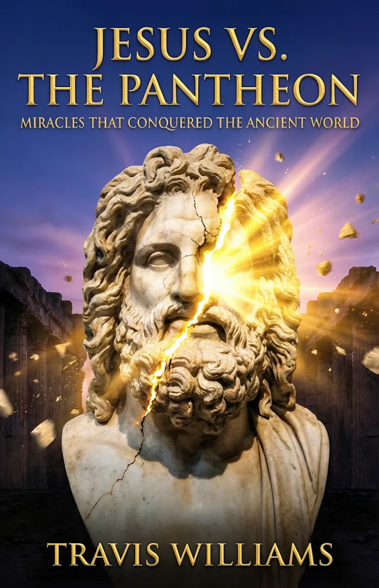

Discover the historical and biblical journey of how the miracles of Jesus confronted and overcame the greatest deities of the Greco-Roman world.
Pre-Order on AmazonTravis Williams is an ordained minister in the Zion United Baptist Convention of The Bahamas, where he serves as a dedicated teacher of the Scriptures at Mt. Calvary Baptist Church. For over two decades, he has pursued a deep personal study of biblical prophecy and biblical history, with a particular passion for uncovering the rich historical and cultural contexts of the Bible.
His ministry is firmly rooted in a commitment to Christian education. Travis has been trained to equip Sunday School teachers through the Caribbean Bible Fellowship (CBF) and regularly leads Bible studies in his local congregation. Driven by a desire to encounter the Scriptures in their original depth and beauty, he has also completed studies in Biblical Hebrew at the Israel Institute of Biblical Studies (IIBS).
Jesus vs. The Pantheon is the culmination of years of careful research into the dramatic confrontation between the Kingdom of God and the mythological powers of the ancient world. Travis writes with deep conviction that history is far more than a record of human events—it is a living testimony to the absolute supremacy of Christ over every rival power, whether ancient or modern.